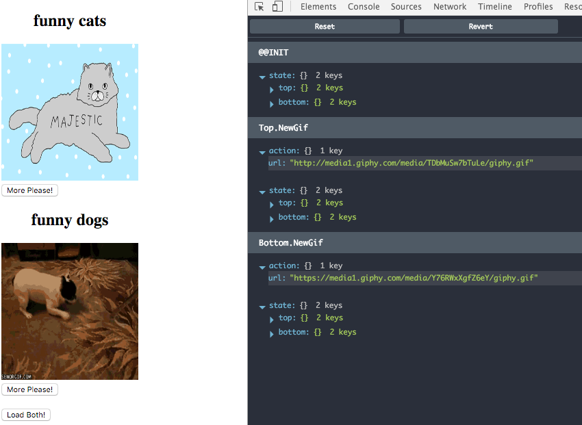
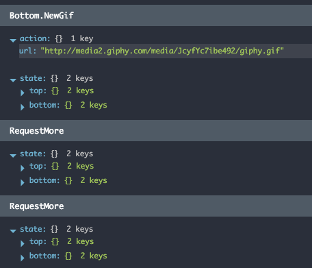

Utilizing Matchers
Time for plumbing, we need to proxy all the actions tagged with Top or Bottom to GifViewer Updater which does the mutation and potentially emits Side effects. Imagine our GifViewerPair Updater as a person who unwraps a package which may contain another package and hand it over to another person (GifViewer Updater) who's responsible for handling content of the package and keep in mind that the package can be wrapped many times for many people (Component Updaters). Therefore we'd need to strip Top. or Bottom. off the beggining of the Action type and provide rest to underlying Child Updater as unwrapped Action.
import { Updater, mapEffects } from 'redux-elm';
import gifViewerUpdater, { init as gifViewerInit } from '../gif-viewer/updater';
const funnyCatsGifViewerInit = gifViewerInit('funny cats');
const funnyDogsGifViewerInit = gifViewerInit('funny dogs');
export function* init() {
return {
top: yield* mapEffects(funnyCatsGifViewerInit(), 'Top'),
bottom: yield* mapEffects(funnyDogsGifViewerInit(), 'Bottom')
};
};
export default new Updater(init)
.case('Top', function*(model, action) {
return {
...model,
top: yield* mapEffects(gifViewerUpdater(model.top, action), 'Top')
};
})
.case('Bottom', function*(model, action) {
return {
...model,
bottom: yield* mapEffects(gifViewerUpdater(model.bottom, action), 'Bottom')
};
})
.toReducer();
We've basically implemented the behaviour with guys unwrapping packages and delegating them to someone else. GifViewerPair Updater just takes any Action starting with Top or Bottom unwraps its content and passes it down to GifViewer Updater along with corresponding Model slice. We can't of course forget on mapEffects because handling that Action in GifViewer Updater may potentially dispatch another Action and we would need to "wrap" it back so that when it gets back to the Updater loop everything will be wrapped again starting in the top of the Updater hierarchy.
And this is it, now try to compile and run the Application and see the result:

However, after you click More Please! button on either Top or Bottom Viewer nothing happens and here's the reason why:

RequestMore action is not wrapped, therefore we need to do one small adjustment in our `GifViewerPair' View.
import React from 'react';
import GifViewer from '../gif-viewer/view';
export default ({ model, dispatch }) => (
<div>
<GifViewer model={model.top} dispatch={dispatch} />
<GifViewer model={model.bottom} dispatch={dispatch} />
<br />
<button onClick={() => dispatch({ type: 'Load' })}>Load Both!</button>
</div>
);
Dispatch function passed to corresponding View instance should automatically tag all the Actions with Top or Bottom prefix (wrap the action), we did exactly the same within our Updater using mapEffects function. redux-elm provides a function which does this automatically for you, the function is called forwardTo which takes dispatch function as first argument and infinite number of Strings which defines action wrapping.
import React from 'react';
import { forwardTo } from 'redux-elm';
import GifViewer from '../gif-viewer/view';
export default ({ model, dispatch }) => (
<div>
<GifViewer model={model.top} dispatch={forwardTo(dispatch, 'Top')} />
<GifViewer model={model.bottom} dispatch={forwardTo(dispatch, 'Bottom')} />
<br />
<button onClick={() => dispatch({ type: 'Load' })}>Load Both!</button>
</div>
);
Save & hit refresh button and voila! Now your application also reacts to clicking on More Please! button.